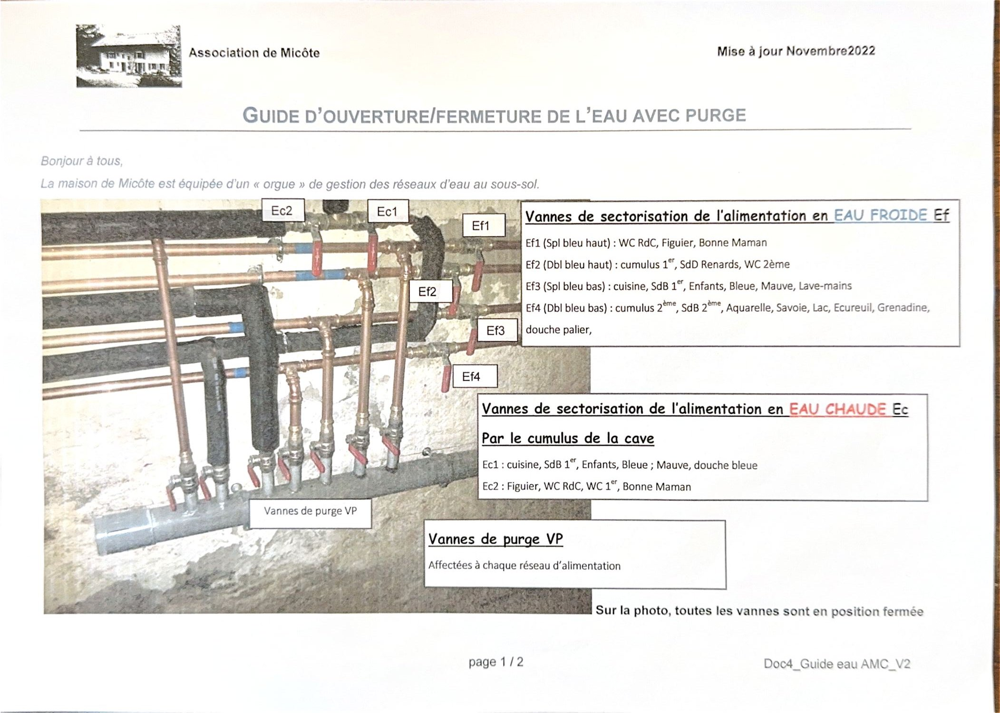
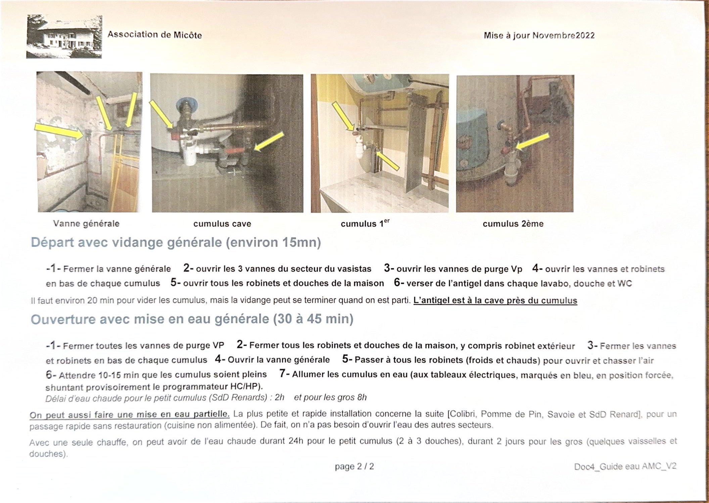

L'« orgue » du sous-sol permet de n'ouvrir que les secteurs utilisés. Chaque vanne alimente un groupe de pièces précis, listé ci-dessous.
Eau froide Vannes de sectorisation Ef
| Vanne | Repère | Pièces alimentées |
|---|---|---|
| Ef1 | Simple bleu haut | WC rez-de-chaussée, Figuier, Bonne Maman |
| Ef2 | Double bleu haut | Cumulus 1er, salle de douche Renards, WC 2e |
| Ef3 | Simple bleu bas | Cuisine, salle de bain 1er, Enfants, Bleue, Mauve, lave-mains |
| Ef4 | Double bleu bas | Cumulus 2e, salle de bain 2e, Aquarelle, Savoie, Lac, Écureuil, Grenadine, douche du palier |
Eau chaude Vannes de sectorisation Ec
Alimentées par le cumulus de la cave.
| Vanne | Pièces alimentées |
|---|---|
| Ec1 | Cuisine, salle de bain 1er, Enfants, Bleue, Mauve, douche bleue |
| Ec2 | Figuier, WC rez-de-chaussée, WC 1er, Bonne Maman |
Les vannes de purge (VP) sont affectées à chaque réseau d'alimentation.

Départ Vidange générale — environ 15 min
- Fermez la vanne générale.
- Ouvrez les 3 vannes du secteur du vasistas.
- Ouvrez les vannes de purge VP.
- Ouvrez les vannes et robinets en bas de chaque cumulus.
- Ouvrez tous les robinets et douches de la maison.
- Versez de l'antigel dans chaque lavabo, douche et WC.
Bon à savoir : il faut environ 20 min pour vider les cumulus,
mais la vidange peut se terminer après votre départ.
L'antigel est à la cave, près du cumulus.
Arrivée Mise en eau générale — 30 à 45 min
- Fermez toutes les vannes de purge VP.
- Fermez tous les robinets et douches de la maison, y compris le robinet extérieur.
- Fermez les vannes et robinets en bas de chaque cumulus.
- Ouvrez la vanne générale.
- Passez à tous les robinets, froids et chauds, pour les ouvrir et chasser l'air.
- Attendez 10 à 15 min que les cumulus soient pleins.
- Allumez les cumulus une fois en eau — aux tableaux électriques, repérés en bleu, en position forcée, ce qui shunte provisoirement le programmateur heures creuses / heures pleines.
Délai avant d'avoir de l'eau chaude : 2 h pour le petit cumulus (salle de douche Renards), 8 h pour les gros.
Variante Mise en eau partielle
L'installation la plus rapide concerne la suite Colibri, Pomme de Pin, Savoie et salle de douche Renard : idéale pour un passage rapide sans cuisiner, la cuisine n'étant alors pas alimentée. Inutile d'ouvrir l'eau des autres secteurs.
- 🚿 Une seule chauffe du petit cumulus donne de l'eau chaude pendant 24 h, soit 2 à 3 douches.
- 🛁 Une seule chauffe des gros cumulus tient 2 jours — quelques vaisselles et douches.
📷 Voir le guide original
